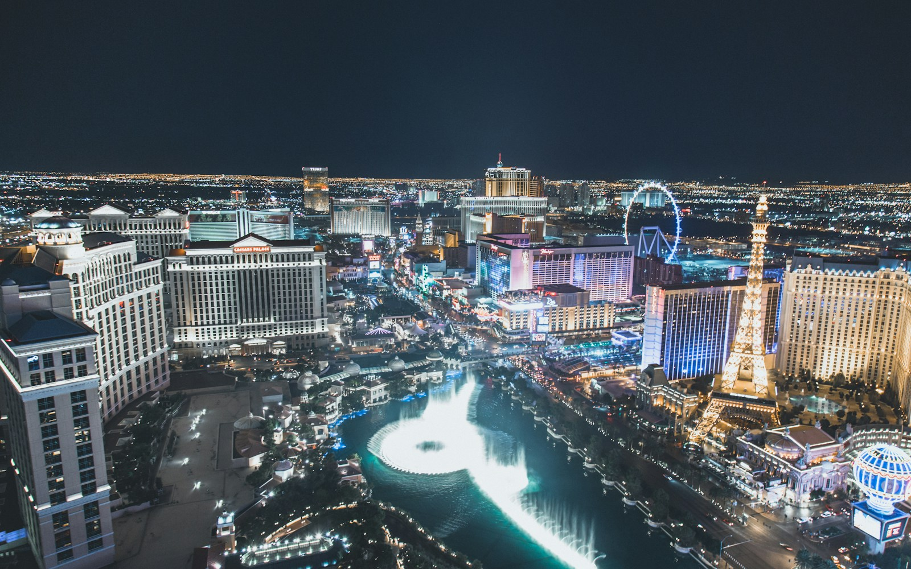

Statue of Liberty
Start with official island tickets. Choose New York departure; pedestal or crown only if available. Standard island access is a good fallback.
Official ticket guidancePacific mornings. Neon nights.
And a New York state of mind.
 CHAPTER 01↗September 9–12 · 3 nightsLos Angeles
CHAPTER 01↗September 9–12 · 3 nightsLos Angeles
CHAPTER 02↗September 12–15 · 3 nightsLas Vegas CHAPTER 03↗September 15–23 · 8 nightsNew York City
CHAPTER 03↗September 15–23 · 8 nightsNew York CityGo big on the moments. Leave room for the trip.
Three nights in LA, three in Vegas, eight in New York. Beach time, rooftop views, a Vegas night out, and New York from the sky.
Open a day for the plan, places and practical details.
Suggested local-time windows · Nothing is booked · September 23 assumed to be departure day
Cafés, Beverly Hills, a Griffith sunset and a whole day by the Pacific.
Pacific days. Hollywood nights.
Allow for immigration, luggage and LA traffic. Check into your hotel, eat something easy and keep the afternoon free until your actual arrival time is known.
Make a short visit to the Walk of Fame and TCL Chinese Theatre. Think of this as a quick first look, rather than a whole afternoon. Skip it if you arrive late.
An easy taco dinner and an early night. Tomorrow has the big views; there is no need to chase a sunset straight off a long flight.
Start in Beverly Hills: a café breakfast, Beverly Gardens Park and a relaxed Rodeo Drive stroll. Enjoy the architecture and window-shopping without needing a designer-shopping budget.
Head to the Original Farmers Market beside The Grove for lunch, then browse the outdoor shops. If independent boutiques appeal more, swap The Grove for Melrose Avenue; choose one shopping area rather than crossing town repeatedly.
Head to Griffith Observatory for the Hollywood Sign view and the city lighting up. Leave plenty of traffic time. The grounds and building are free; check hours if you want to go inside. Finish with dinner in Los Feliz or near your hotel.
Walk the Venice canals, see the beach and skatepark, then head to Abbot Kinney Boulevard for coffee and boutiques. Keep it leisurely: this is a day to feel California, not just photograph it.
Have lunch around Abbot Kinney. Rent a bike from a local shop if you feel like riding the beach path toward Santa Monica; confirm the return location and closing time. Walking part of the path or taking a short rideshare also works.
Spend time on the sand, visit the pier and decide whether a ride is worth it for the view. Stay for sunset, then dinner near the ocean before returning to your LA hotel.
Pool time, a standout show and a night under the downtown neon.
Pack and leave a generous airport buffer. If you hired a car, allow extra time for fuel, rental return and the terminal transfer. Choose LAX or Burbank based on the actual flight and your hotel.
A nonstop flight is roughly 1–1.5 hours in the air; allow a half day door to door. LA and Las Vegas share Pacific time. Check in and take a break before heading out.
Start around Bellagio: see the conservatory, catch the fountains if operating and wander toward Caesars Palace. Save the Venetian and other resorts for tomorrow instead of walking the entire Strip tonight.
Sleep in, have brunch and enjoy your hotel pool. If a dayclub sounds fun, consider Marquee at the Cosmopolitan instead of the hotel pool and check Sunday’s actual event, admission and dress rules before booking.
Explore the Venetian and its indoor canals, stop for lunch or a snack and browse the Grand Canal Shoppes. Leave time to go back to the hotel and get ready.
Pick a performance actually listed for September 13, with dinner timed around it. The Wizard of Oz is one current Sphere option to investigate. If you want dancing afterward, choose a venue by that night’s music and event calendar; it is optional, not another obligation.
A late breakfast, a swim or coffee and people-watching. This morning stays open after Sunday night.
Keep it relaxed with a resort wander and shopping, or choose an immersive art experience such as Meow Wolf’s Omega Mart at AREA15 if that sounds more fun. Check timed tickets and allow travel time; it replaces the resort afternoon.
Take a rideshare downtown for the illuminated canopy, music and old-school Vegas energy. SlotZilla is an optional zipline if you want an adrenaline moment. Have dinner, then head back and pack for tomorrow’s flight.
Eight nights for the icons, the neighborhoods and the little things in between.
The city you already know by heart.
Choose a morning nonstop if possible. The flight takes roughly 5 hours and New York is 3 hours ahead, so much of the day disappears. Check whether you land at JFK, LaGuardia or Newark.
Allow for baggage and the airport transfer before committing to plans. Use the appropriate airport’s official transport guidance; the three airports have different routes.
If arrival allows, make a short visit to Times Square. Get the photos, take in the lights and have dinner. Save the full sightseeing day for tomorrow.
Choose an optional hop-on/hop-off bus introduction, or a shorter walk around Midtown. If taking the bus, check today’s route and stops; it is sightseeing, not a reliable transfer to your flight.
Aim for a HeliNY Downtown Manhattan departure, such as its 17–20 minute Ultimate Tour. Reach the heliport independently, allowing transit time plus the required check-in. Confirm the exact address on your reservation.
Keep the rest of the day nearby: a Seaport stroll, waterfront views and a relaxed dinner. The helicopter is the headline; no need to race straight to the opposite end of Manhattan.
Reserve a morning Statue City Cruises departure from New York, not New Jersey. Follow the ticket’s screening and arrival instructions. The selected ticket time relates to entry into screening, not a guaranteed ferry departure.
Allow about 4–5 hours overall, longer for deep museum visits. Choose pedestal or crown only if available and suitable; the standard island visit is still worthwhile. Ellis Island adds context to America’s immigration story.
If energy allows, walk past Wall Street and visit the outdoor 9/11 Memorial respectfully. The museum is a separate, longer visit. Skip an extra observation deck; Top of the Rock is already planned.
Start with coffee and browse the food stalls. Pick lunch when something looks good instead of building the day around a hard-to-get reservation.
Walk a manageable stretch of the High Line, then head toward Little Island. Stop for river views, take breaks and check park access before setting off.
Wander the smaller streets, see Washington Square Park and find dinner in the Village. Reserve ahead if there is a particular restaurant you really want.
Walk the Mall, Bethesda Terrace and Bow Bridge. Take a coffee break and leave time simply to sit. You do not need to cover the entire park.
Head south for Fifth Avenue, St. Patrick’s Cathedral and Rockefeller Center. This groups the sights naturally without repeated subway trips.
Reserve a time before sunset if the forecast is good. You get the Empire State Building in the skyline rather than standing inside it. Sunset slots can cost more and fill up.
Start on the Manhattan side and cross to Brooklyn. Go early for a calmer walk, keep the path clear for others and leave plenty of time for photos.
Find the Washington Street view, have lunch around DUMBO and wander the waterfront. Take photos from the sidewalk rather than standing in traffic.
Continue to Brooklyn Heights Promenade if your feet are happy. Stay for the light changing over Manhattan, then take the subway or a ferry with a confirmed return route.
Spend the morning at the Metropolitan Museum of Art. Choose two or three collections rather than trying to see everything. Monday fits its published weekly schedule; the museum is closed Wednesdays.
Take transit to Grand Central, then walk to Bryant Park and the New York Public Library’s main building. Check visitor access and tour times if you want to go inside.
Have dinner, then try a rooftop such as 230 Fifth for the Empire State Building backdrop if the weather is good. Check that evening’s opening and entry rules. A mocktail and the view are just as much the point as a cocktail.
Coffee, shopping, cast-iron streets and time to explore. This is intentionally a loose morning for whatever you still want to do.
Walk to Chinatown for lunch and pass through Little Italy if you are curious. Alternatively use the daytime for a rescheduled helicopter, Brooklyn walk or a favorite place you want to revisit.
Book a Tuesday performance through the show’s official ticket link. Choose a story or music you already like; a visual musical can be a fun first choice. Eat nearby and arrive according to the theater’s guidance.
Breakfast near the hotel and a short local walk. Keep luggage storage and checkout in mind. No major attraction or nonrefundable booking today.
Build the transfer around your actual departure airport and airline guidance. For an international flight, plan to reach the airport around 3 hours early, with travel time and a traffic buffer added on top.
Use any genuine spare time for a nearby café, a final shop or a familiar park. Return to collect luggage well before your planned airport transfer.
Check availability before fixing the order.
All links go to planning or booking pages; no reservations have been made.
Start with official island tickets. Choose New York departure; pedestal or crown only if available. Standard island access is a good fallback.
Official ticket guidanceThe trip’s helicopter ride. Confirm a Manhattan departure, total charges and weather policy. Keep September 18 or 22 available for a weather reschedule.
NYC operatorChoose a Sphere performance or a music-led Vegas night out, then a Broadway show you will enjoy. Confirm actual dates before booking; leave travel evenings flexible.
Broadway showsTop of the Rock is the one planned observation deck. Check the weather and ticket-change policy before choosing your time.
Official deck ticketsVegas: Sphere calendar · Rooftop: 230 Fifth
LA: use rideshares for city days and plan coast transport in advance. A rental is optional; at 23, confirm age rules, extra fees and accepted driving documents directly with the rental company.
Vegas: walk small clusters of resorts, then use a taxi or rideshare. For NYC, use walking and the subway; tap the same card or device consistently. Current MTA fare guidance
LA and Vegas are on Pacific time. NYC is three hours ahead. All itinerary windows use the destination’s local time.
LA traffic and airport transfers are the main schedule risks. Keep both flight days light. The September 18 and 22 daytime plans can absorb a weather-delayed NYC helicopter ride.
Allow roughly $650–1,100 per person for the NYC helicopter, Sphere, Broadway, the Liberty ferry, one deck and a museum. This is a planning allowance, not a live quote; premium seats, nightlife and shopping can raise it.
Hotels, flights, food, local transport, shopping and optional extras are separate. Compare final totals including taxes, facility charges and Vegas resort fees.
Comfortable walking shoes, a refillable water bottle, sunglasses, sunscreen, a light layer and a power bank will earn their space. Bring a US plug adapter and check your charger’s voltage label.
Use mobile data for maps, save tickets offline and keep an extra copy of essential travel documents. Confirm any ID requirements on flight and activity bookings.
The western leg has six nights. Keep those for LA and Vegas instead of adding distant stops and hotel moves. Malibu can replace the Venice morning; Universal can replace the LA shopping day. Neither needs to become an extra obligation.
Planning information checked September 5, 2026. Operator pages can change. Dates, prices, opening hours, routes and availability must be reconfirmed at booking. Flight times and day lengths are estimates; hotel and airline choices are still open.
The official sources are linked beside the relevant day and booking item. Key references: National Park Service , HeliNY , The Met and Broadway League .
Photography: Los Angeles · Venti Views; Las Vegas · Kevin Bosc; New York · Sebastian Schuster. Photos via Unsplash, under the Unsplash License.